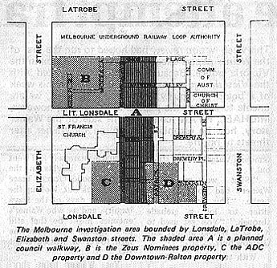

|
By
Robin Howells
in Melbourne
VICTORIA'S Liberal
government headed by Rupert Hamer is locked in a battle with a
private firm over who should develop a one acre block of land in
Melbourne's golden mile.
The
land, estimated to be worth at least $6.5 million, is owned by
Zeus Nominees Pty Ltd. It is adjacent to the Museum station site
for Melbourne's underground and is in the block bounded by
Swanston, Latrobe, Elizabeth and Lonsdale streets. The site is
mainly occupied by old, rundown buildings.
Following a request from the Melbourne Underground Rail Loop
Authority (MURLA), and the Melbourne city council, George J.
Connor & Associates produced a report on the development
potential of the block.
The
report, presented in august last year, said: "There is no
central city block in Melbourne or in any other major Australian
city that has greater scope and need for planned redevelopment
over the next 5-10 years."
It
has been estimated that the Museum station will bring 50,000
people a day into the area. The report predicted that the block
would generate redevelopment of more than $200 million.
Zeus
Nominees Pty Ltd started to acquire properties in the block in
1972. They managed to consolidate 23 properties in a site of
just over one acre. But since then Zeus has been unable to get
permission to develop the land.
Zeus
wrote to transport minister Ray Meagher and local government
minister Alan Hunt. The state government declared the area an
investigation area on february 22, 1974. Hunt commissioned the
Town and Country Planning Board to report in 12 months time.
The
Town and Country Planning Board sat on the job for four months
without doing anything, until complaints by landholders in the
block became so intense that the government set up a steering
committee in late july with representation from MURLA, the MCC,
the Town and Country Planning Board and the board of works.
The
committee's finished report went first to Hunt, then to a
cabinet subcommittee comprising Hunt, Meagher, and
attorney-general Vernon Wilcox.
The
report, which was released last wednesday, recommends that the
whole of the investigation area needs controlled development and
that it be declared a designated area pursuant to the
Development Areas act. This effectively freezes all land
development and speculation in the area for two years.
In
the meantime Zeus have advertised their land for auction on
april 23. They have advertised worldwide.
When
the Connor report was presented last august it was estimated
that the Zeus site was worth $4.2 million. Today it is estimated
to be worth $6.5 million. If the government decides to purchase
or compulsorily acquire the Zeus owned land, where will they get
the money from?
The
state of Victoria is now committed to a loop system for an
underground which, Victorian cabinet members have confided to
close friends, is going to cost in excess of $600 million. The
original announcement of the cost of the underground in 1970 was
$80 million. The cost is to be shared three ways with the state
government paying 50 percent, the Melbourne city council and the
board of works contributing 25 percent each.
|
 |

The
federal Labor government looks upon the Melbourne underground as
being a massive misallocation of resources and has shown no
interest in financing such a fiasco. It is totally opposed to
the idea of providing finance for an underground which will
improve the value of properties held by developers.
The
Melbourne loop project was entered into without any cost benefit
analysis taking place. This was despite the visit of transport
minister Meagher to Canada in 1967 to study the Toronto loop
system.
Toronto built its loop for nothing. The city did this by
purchasing all the available land around the loop and then
selling all the land back at increased prices because of the new
business brought into the area by the loop. When it sold the
land back to redevelopers it made huge profits.
The
Melbourne city council has said that it can't meet its loop
payments for this year. If the MCC increases its rates
substantially to pay the increasing amounts due on its share,
the council will drive firms out of Melbourne into the lower
rated surrounding areas.
Lord
mayor Ron Walker points out that it is the people who are going
to use the loop least who are going to have to pay for it. He
says that loop is an integral part of the railways metropolitan
transport system and that an undue share of the cost is being
put on city dwellers and land owners.
Rupert Hamer has to bear a lot of the criticism for the problems
now associated with the loop. When he was minister for local
government, Hamer was involved in a lot of the initial
decision-making over the loop. It was Hamer who promised father
Negry of the nearby St Francis church that under no
circumstances would the church area be placed under
investigation. However, subsequently it was.
The
three major land developers in the designated area are Zeus
Nominees Pty Ltd, the Australian Development Corporation Ltd and
Downtown Car parks Pty Ltd.
Zeus
Nominees Pty Ltd has two shares on issue held by the directors,
Frank W. Jones of North Balwyn and Joseph A. Santa Maria of East
Oakleigh. Guarantors of the comapny's mortgage include David
Pethard of South Yarra, and his company, Arax Investments Pty
Ltd; Leslie Nagy of Sydney and his company, Nagy Investments Pty
Ltd; Solomon Lew of North Caulfield and the Lew family's Voyager
Holdings Pty Ltd and SL Nominees Pty Ltd,
Lawrenny Pty Ltd, Kenallan Pty Ltd and Vanguard Ltd.
Downtown is over 90 percent owned by Hoddle Holdings Pty Ltd
which is almost equally controlled by Gordon D. Banfield and sir
Maurice Nathan of Paterson's, the furniture retailers.
Australian Development Corporation Ltd is about 57 percent owned
by the family company of the chairman, Sidney Fischer of Sydney.
|